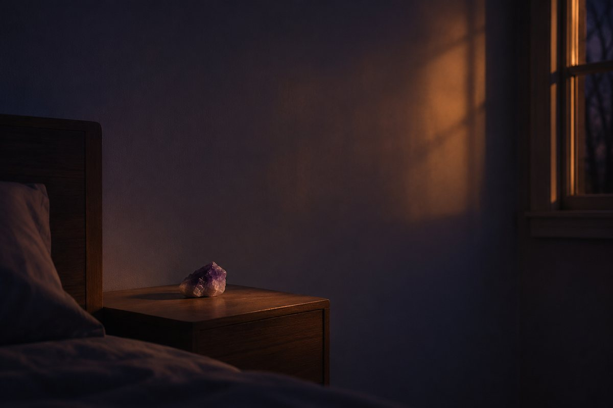
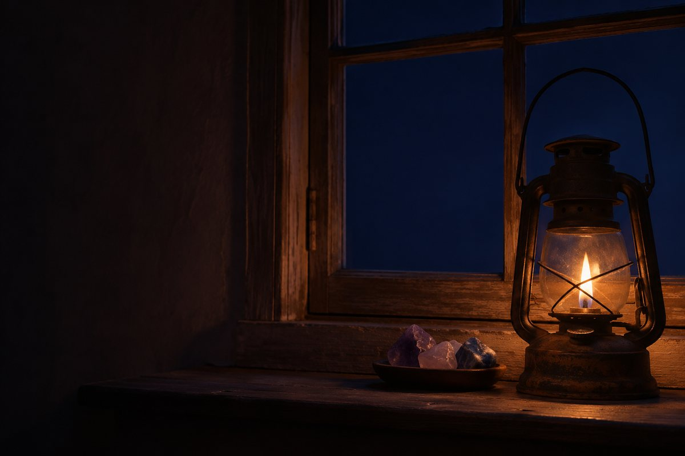
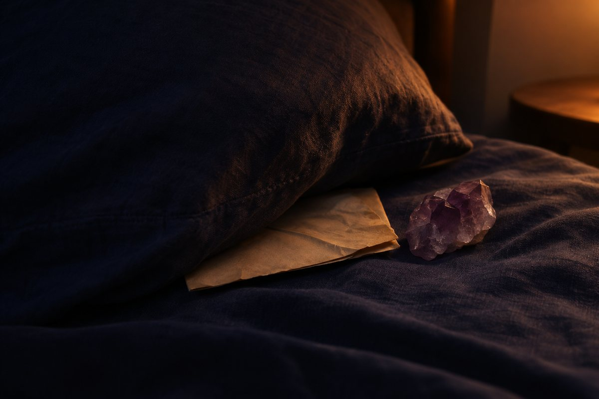
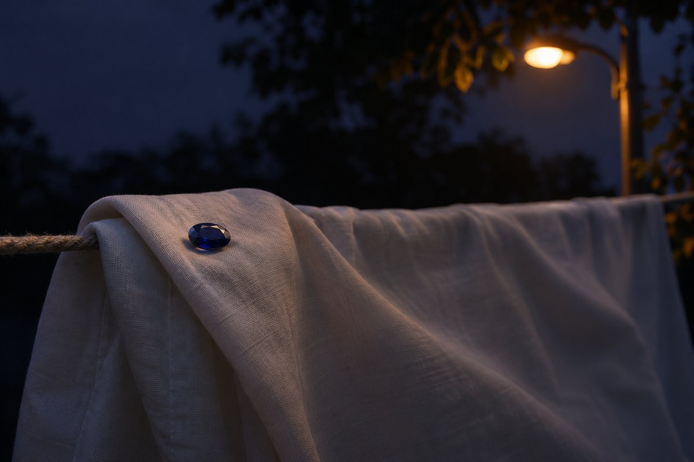
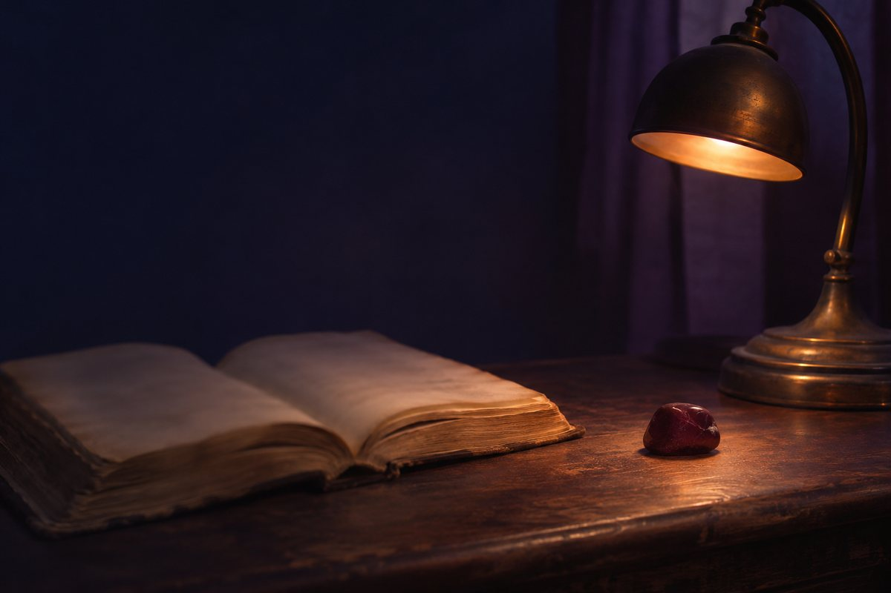
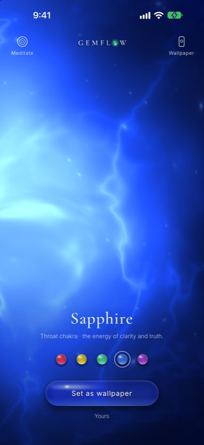
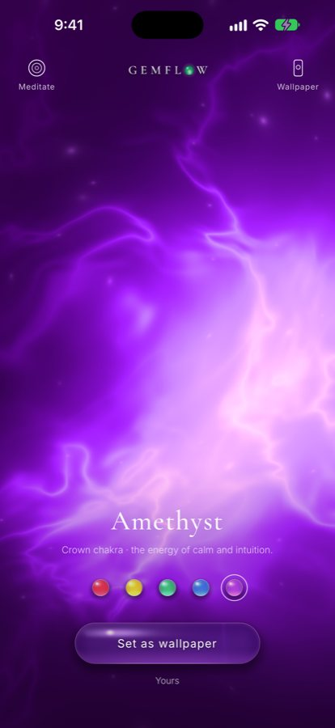

Crystals for sleep · amethyst · sapphire
Crystals for sleep: who keeps watch when you close your eyes?
The house has gone quiet, but you are still listening. A conversation keeps its shoes on inside your head. Tomorrow stands in the doorway, wanting something. Who will keep watch if you stop? Beside your pillow, amethyst holds a little violet; sapphire, a little sky. You can give these small colors a place beside the unfinished day. Outside, a streetlight lays its pale square on the wall, a letter slipped under the door with nothing you need to answer.

The night watch
What if you could set down the lantern?
In George Frederick Kunz’s The Curious Lore of Precious Stones (1913), a lapidary attributed to Aristotle describes two extraordinary stones. The red “sleeping-stone” glows in darkness; its wearer, the account says, “would sleep uninterruptedly for three days and nights”. Its green companion, the “waking-stone,” belongs to those who must keep watch.
Even this strange old account gives the night two keepers. One closes her eyes. One stays beside the lantern.
Think of the light outside your window, the shirt waiting on a chair, the cup you will wash tomorrow. Each can remain exactly where it is.
You are allowed to leave your post with something unfinished.

Amethyst · the unopened letter
Can a stone hold a dream without asking you to explain it?
Kunz records amethyst’s Hebrew name, aḥlamah, alongside halom, “dream,” and the belief that the stone invited dreams and visions. Its Greek name points toward being sober. One stone, with a doorway into dreams and a name that keeps its feet on the floor.
There is something tender in that pairing. Imagine an old letter beneath a pillow: the paper stays folded while everything it means moves through the room. Amethyst belongs beside that letter, violet as the space between remembering a voice and hearing it again.
Hold it for a moment, then place it by your bed; for stone care, see how to cleanse crystals.
You can have an inner life that owes nobody an explanation tonight.

The heart after midnight
What do you do with a feeling that refuses to go to bed?
In Speculum lapidum (1502), Camillo Leonardi describes amethyst as having “a sobering effect,” extending even to “those over-excited by the love-passion”. Kunz carries the passage into his 1913 book, and across the centuries comes the familiar sight of someone lying awake over someone else.
The last message. The missing message. The sentence you keep rewriting after the conversation has ended.
Set an amethyst beside the lamp as you would set down a letter you have read enough times for one evening. The words remain. The person remains. Your hand opens, empty now, on the sheet.
You can care deeply and still put the letter down.
Sapphire · a piece of sky
Where does the sky go when you turn off the light?
Kunz records the tenth-century bishop Andreas of Caesarea describing sapphire through the words “As the sapphire is likened to the heavens”. Kunz himself calls it “the gem of autumn, the blue of the autumn sky”.
Picture that blue folded small enough to rest beside a glass of water. A whole distance gathered into something you could cover with your hand. It has the feeling of freshly dried sheets lifted from a line, a brief billow of sky before they settle across the bed.
Beside amethyst’s inward violet, sapphire gives the imagination somewhere wide to look.
You can let your thoughts have a horizon beyond tomorrow’s list.

The dream’s handwriting
What if the night had something gentle to say?
Kunz retells the old dream-books of Artemidorus, from the second century, and Achmet, from around the eighth, then sets down a table of gemstone dreams. Its entries read like tiny notes left beside a bed. Amethysts: “Freedom from harm.” Sapphires: “Escape from danger.” Emeralds: “Much to look forward to.” Rubies: “Unexpected guests.”
Read them as you would read a letter found in an old coat pocket, letting the words have their own weather. Freedom. Escape. Something ahead. Someone at the door.
After a day spent anticipating what could go wrong, those phrases have the tenderness of a mother humming in the next room.
You are allowed to imagine a tomorrow that brings you something welcome.
An imperfect stone
Must everything be right before you can rest?
In De subtilitate (1560), Cardano writes of wearing a jacinth that “seemed to dispose somewhat to sleep, but not much.” He also finds fault with its color.
There he is, across all those years: a man with a stone, a night to get through, and an opinion about the stone. You can almost see him turning it toward the lamp, still inspecting, still finding one more thing that could be better.
The pillow needs turning. The room needs tidying. The day needs a different ending. There is always another small correction waiting beneath the light.
You can leave the stone its imperfect color and yourself this unfinished evening.

A place beside the pillow
What are you asking the stone to carry?
In Faithful Lapidary (London, 1659), Thomas Nicols lists claims made by gemstone writers, including “to move dreams, to procure sleep”. Nicols himself did not believe those claims. Still, the little phrase preserves a longing: someone wanted the night to open kindly.
Tonight, give that longing a simple shape. Amethyst at the bedside. Sapphire nearby, if you have it. A hand resting on the sheet where it has finally stopped reaching for something.
The stone can be a companion to this ordinary scene, like a familiar song hummed too softly for anyone beyond the room to hear.
You do not have to turn this evening into another thing to accomplish.
A ritual for tonight
How will you set down the day?
- Make one small place. Put an amethyst beside your pillow or on the nightstand. If you have a sapphire, place it nearby, leaving a little space between the violet and the blue.
- Let your hand be a hand. Hold the amethyst in your palm for a few moments. Notice its weight and the warmth of your skin where they meet.
- Lower the light. Turn off the overhead light and leave a small bedside lamp on. Let its circle be enough room for this moment.
- Take a few slow breaths. Feel the sheet beneath your fingers as you breathe in and out. There is no number to reach.
- Give the quiet a sound. Play a little singing bowl or ocean sound, softly. Listen as you would listen to water beyond an open window.
- Put the stone down. Return it to the bedside, turn off the lamp, and leave one sentence with the day: The rest can wait here until morning.
Let the streetlight keep its pale square on the wall tonight; you are allowed to stop keeping watch.

Your nightly companion
Amethyst and sapphire in Gemflow
In Gemflow, amethyst and sapphire are living lights: violet that glows from deep inside the stone, blue like the sky folded small, never the same twice. Dim your phone, open Meditate and let the light rise and settle with your breath, with real singing bowls, guqin and ocean waves, from one minute to twenty. Nothing to read, nothing to finish. More about the stones: amethyst and sapphire.

Keep reading
The violet of amethyst crowns the body: the crown chakra, a thousand petals open to the sky. Sapphire’s blue belongs to the throat chakra, where your silence becomes a voice. For every stone and its color, see chakra colors and their stones.
Crystals for sleep at a glance
| Amethyst, Hebrew name | Aḥlamah, read beside halom, “dream” Kunz 1913 |
|---|---|
| Amethyst, Greek name | “An enemy or preventive of inebriety” Kunz 1913 |
| Amethyst in 1502 | Controls “evil thoughts”; “a sobering effect” Camillo Leonardi, Speculum lapidum |
| Sapphire | “Likened to the heavens”; “the blue of the autumn sky” Andreas of Caesarea; Kunz 1913 |
| Dreaming of amethysts | “Freedom from harm.” Kunz 1913, after the old dream-books |
| Dreaming of sapphires | “Escape from danger.” Kunz 1913, after the old dream-books |
| The “sleeping-stone” | Red, glowing in the dark; three days and nights of sleep Pseudo-Aristotle, in Kunz 1913 |
| Where to keep it | Beside the pillow or on the nightstand Modern practice |
| In Gemflow | Amethyst, Sapphire Gemflow app |
Questions
Which crystal is best for sleep?
Amethyst is the crystal most often kept by the bed for sleep. Its Hebrew name, aḥlamah, is linked to halom, “dream” (Kunz, 1913). Sapphire, the stone “likened to the heavens”, is the other one people choose for a calm night.
Where should I put amethyst for sleep?
Amethyst for sleep is usually placed beside the pillow or on the nightstand. Some people hold it for a few slow breaths first, then set it down before turning off the light.
Can I sleep with a crystal under my pillow?
A crystal can go under the pillow, though a smooth stone on the nightstand is more comfortable. Old lapidaries also told of stones placed beneath the head of a sleeping person.
Why is amethyst called the dream stone?
Amethyst is called the dream stone because its Hebrew name, aḥlamah, was read beside halom, “dream”, and the stone was believed to invite dreams and visions (Kunz, 1913).
What does it mean to dream of sapphires?
Dreaming of sapphires means “Escape from danger” in the table of gemstone dreams Kunz gave in 1913, after the dream-books of Artemidorus and Achmet. Amethysts mean “Freedom from harm.”
What was the sleeping-stone?
The sleeping-stone was a legendary red stone in a lapidary attributed to Aristotle. It shone in the dark, and whoever wore it “would sleep uninterruptedly for three days and nights” (Kunz, 1913).
Can crystals cure insomnia?
Crystals are not a treatment for insomnia or any sleep disorder. People use them as a bedtime ritual and a quiet companion. If sleep problems last, talk to a doctor.
Notes and sources
- George Frederick Kunz, The Curious Lore of Precious Stones (1913): amethyst’s Hebrew name aḥlamah and “the virtue of inducing dreams and visions (cf. halom, ‘dream’)”; the Greek name as “an enemy or preventive of inebriety”; sapphire as “the gem of autumn, the blue of the autumn sky”; the table of gemstone dreams.
- Camillo Leonardi, Speculum lapidum (Venice, 1502), in Kunz: amethyst “had the power to control evil thoughts”, with “a sobering effect” even on “those over-excited by the love-passion.”
- Andreas, bishop of Caesarea (10th century), on the foundation stones of Revelation, in Kunz: “As the sapphire is likened to the heavens.”
- Pseudo-Aristotle, De lapidibus, in Kunz: the “sleeping-stone”, whose wearer “would sleep uninterruptedly for three days and nights”, and the “waking-stone” for “men who must watch at night.”
- Artemidorus, Oneirocritica (2nd century), and the dream-book of Achmet (c. 8th century), in Kunz.
- Girolamo Cardano, De subtilitate (Basel, 1560), in Kunz: his jacinth “seemed to dispose somewhat to sleep, but not much.”
- Thomas Nicols, Faithful Lapidary (London, 1659), in Kunz: the claims of the lapidaries, “to move dreams, to procure sleep”, which Nicols himself doubted.
- Gemflow is for relaxation, meditation and ritual; it is not a medical product and does not treat sleep disorders.
© 2026 Gemflow · Home · Solfeggio frequencies · 396 Hz · 528 Hz · 639 Hz · 741 Hz · 963 Hz · Chakra stones and frequencies · Ruby · Citrine · Emerald · Sapphire · Amethyst · Privacy